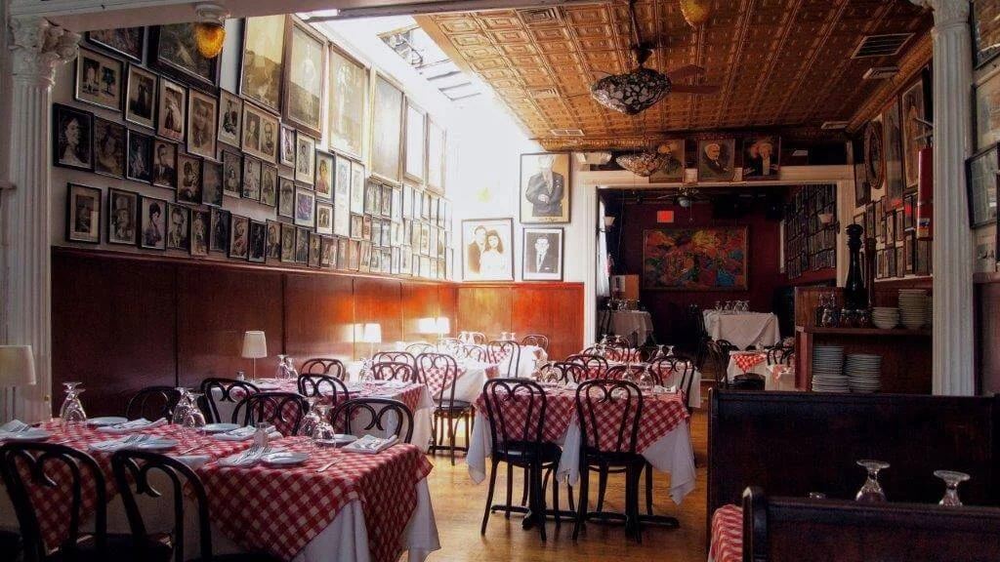
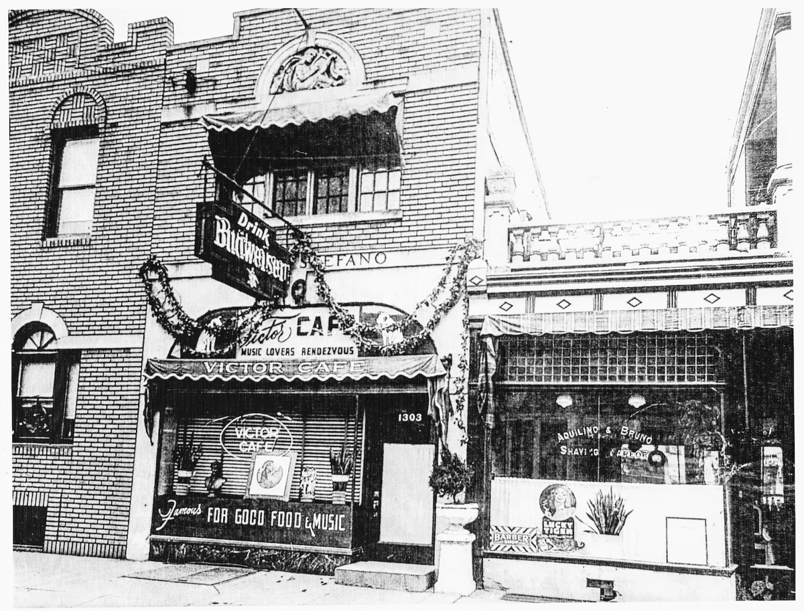
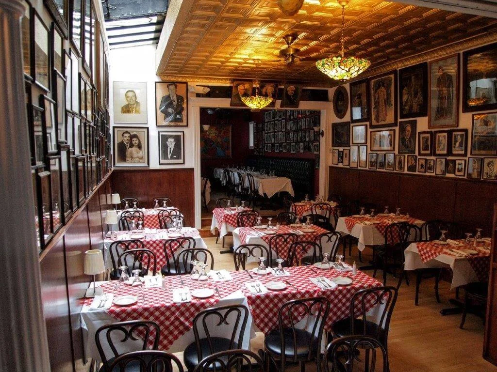
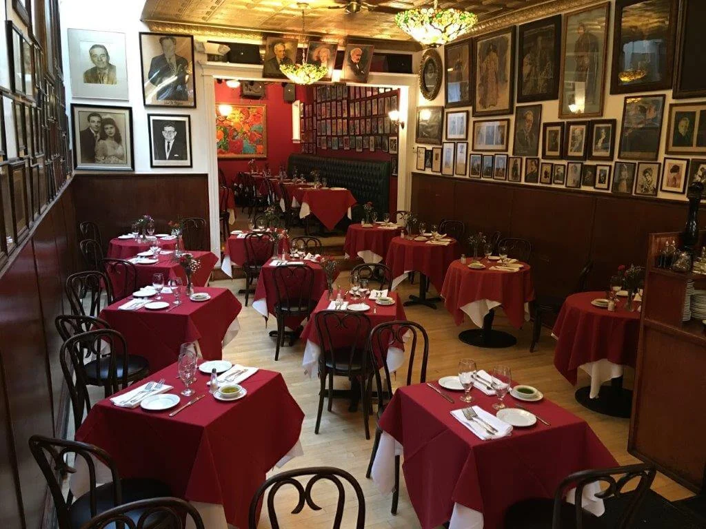
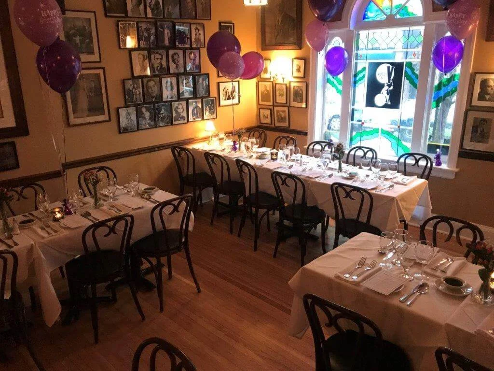
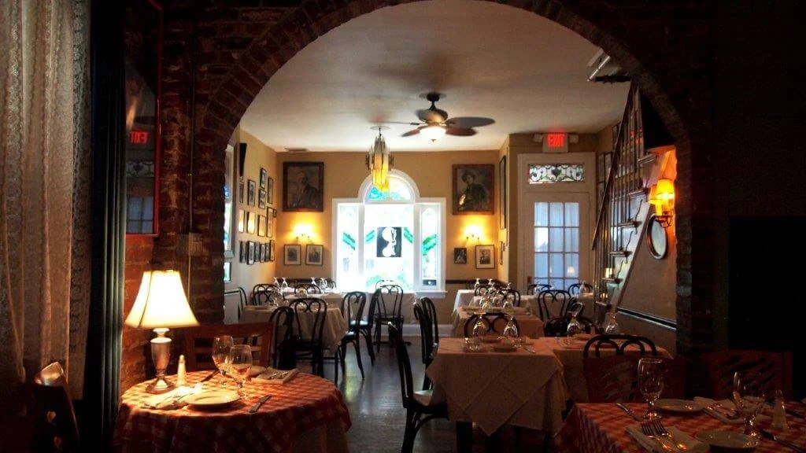
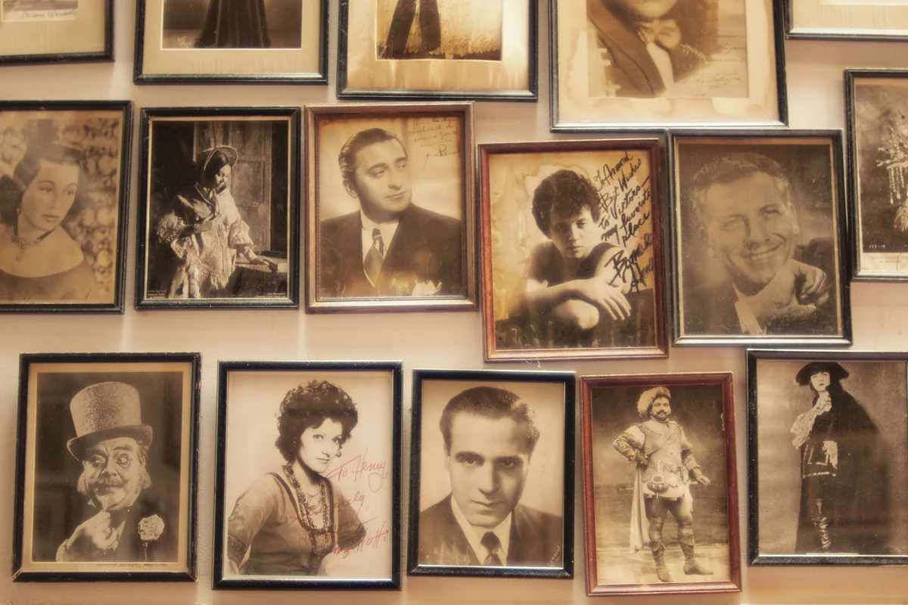
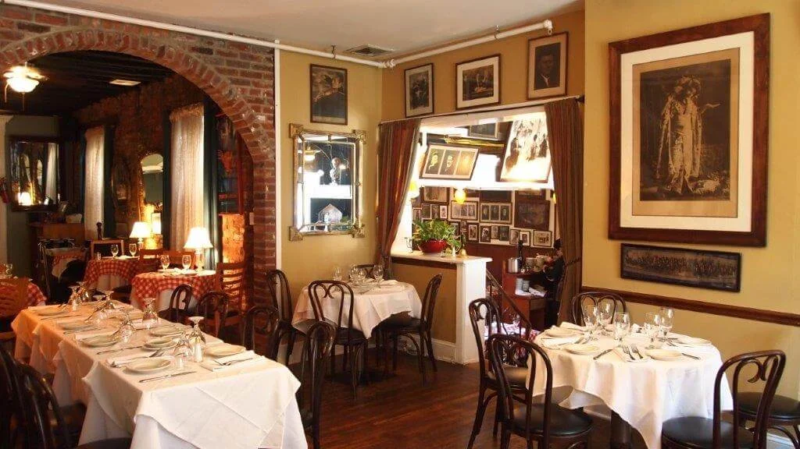
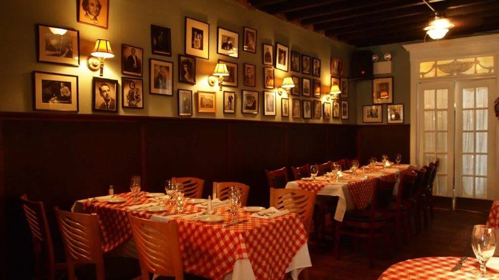

Philadelphia | Restaurant
Served with a Side of Opera
Living history, Italian dining, and opera in South Philadelphia.

Signature offerings, clearly framed.
Cocktails, wine, banquet menus, gift cards, and reservations
Valet parking seven nights per week
The story
Living History in South Philadelphia
Since 1918, Victor Cafe has blended old traditions with new ones to create the living-history atmosphere its guests return to year after year. Dinner pairs Italian classics with opera in the heart of South Philadelphia.
Established in 1918, Victor Cafe continues to preserve old traditions while creating new ones

See what makes this place distinct.







Worth knowing
Italian dinner with antipasti, pasta, seafood, meat, vegan, and gluten-free-capable dishes
Living history, Italian dining, and opera in South Philadelphia.
Explore the official siteVisit and contact
Make the next visit easy.
Verified details and direct official links, together in one place.